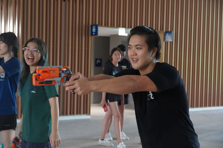
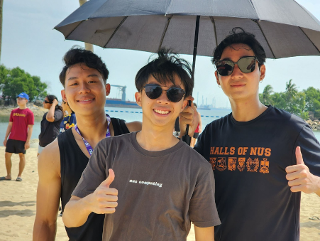
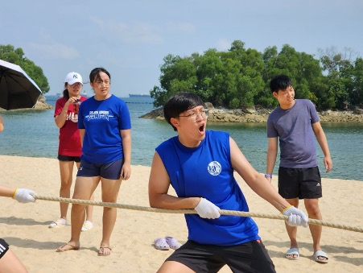
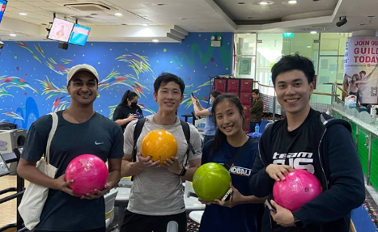
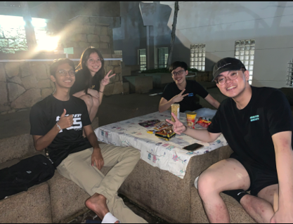
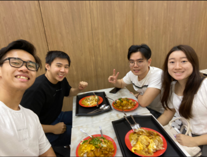
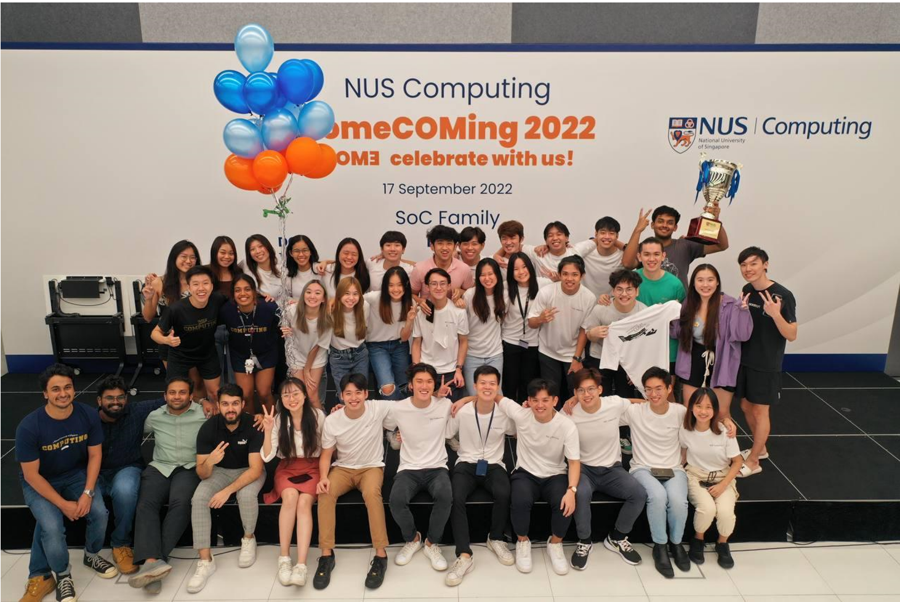
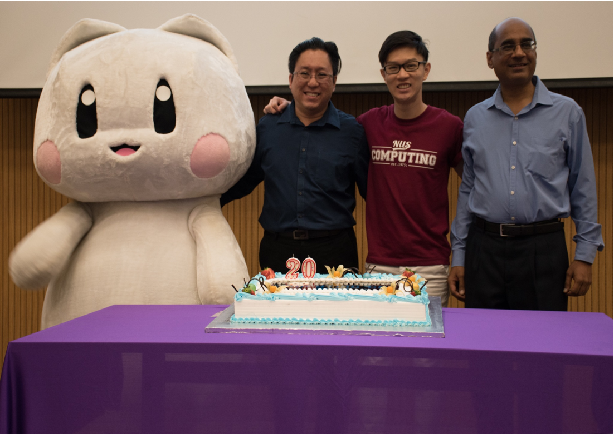
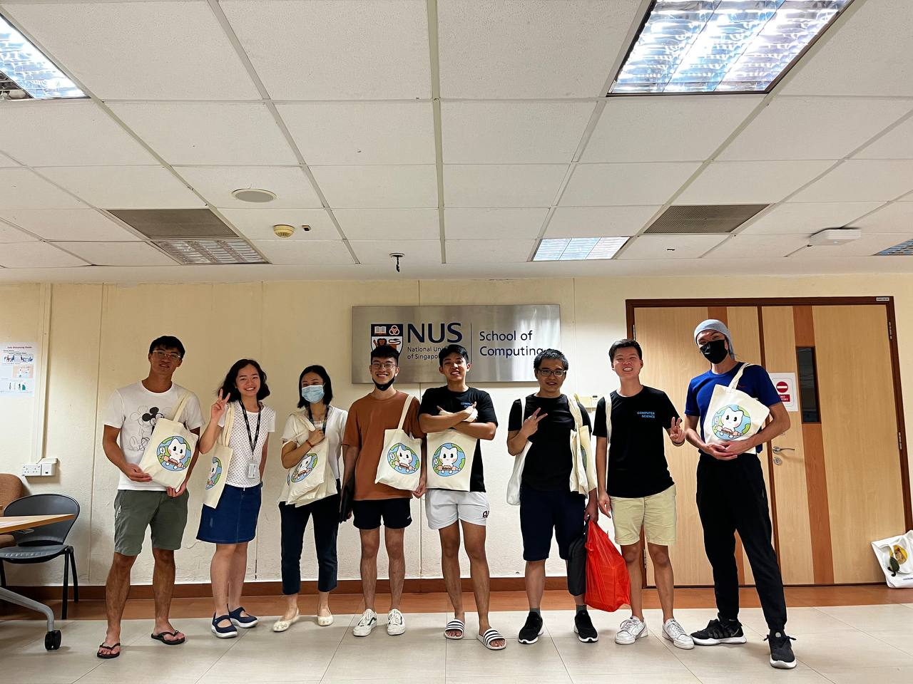

Student Life
Student Life is the largest and most active Wing in Comp Club, where we plan and organise events that shape
the Computing experience - from Freshmen's first impression of SoC to the Alumni's point of contact
post-graduation.
Our events include Freshmen Orientation Projects and Student Engagement. Beyond events and activities, we
take care of the shared Student Lounge and strive to promote active communication between Comp Club and the
student body.
Ultimately, we aspire to bring the SoC community together and help forge everlasting
friendships.
Introduction
Vice President (Student Life) oversees all student life-related activities under FOP Cell and Students Engagement Cell and provides a vision that all the events aim towards.
Roles
VP(SL) works with the directors and relevant cells within Computing Club to:
- Ensure the planning and operations of student life-related events go smoothly.
- Provide administrative and operational instructions to the directors, project directors and their teams.
- Strike a balance between the success of these event planning and the well-being of all personnel involved.
- Meet the expectations of all the stakeholders, including the advisors, the club, the committee and the participants to guarantee effective and meaningful experiences for everyone.
Experience
The Student Life Wing is in charge of some of the biggest events in SoC, including Orientation Camps
and BASH. As part of this Wing, you could anticipate being involved in fun and engaging events, making
many new friends and memories along the way. However, it is not to say that my experience as VP(SL)
was stress-free. While there are challenging times to go through, at the end of the day, it is really
heartening to see participants enjoying themselves during the events, and to see events involving over
600 people come to fruition.
As VP(SL), there is a huge responsibility in ensuring that the events are safe and inclusive. At the
same time, the Directors and Project Directors will also be facing pressure during busy periods of
time. It is then the role of a VP to ensure that your Directors and Project Directors, as well as OComm
members, are well supported in terms of manpower, and are given sufficient rest.
I am thankful to have the most passionate and involved team of Directors and Project Directors working
alongside me. Each one of them cared deeply for the welfare of the students and in planning the events,
they would always have the participants’ best interests at heart. We would recount our experience from
previous years and aim to organise events better than the last. Without the Directors and Project
Directors, the events would not have run smoothly and many goals would not have been made possible.
Being part of a Club with so many different Wings and Cells of various functions, as well as being in
charge of various events, the key takeaway for me would be communication. A slight miscommunication
could cause a lot of issues along the way. If some things do not work out as expected, it is best to
be honest with the other VPs and your Directors. Since this is a collective effort, you should not be
dealing with things alone, and if you need help, always reach out to the rest of the Club.
That being said, it is good to maintain a cordial relationship with everyone you are working with.
Help other Wings as much as you can, while also keeping in mind the capacity of yourself and your
Directors.
To the next VP(SL): Do not let the fun fool you! It can get pretty tough taking on this role, or being
in this Wing at all. However, you can expect to grow a lot as a leader, learning to care for the welfare
of the people in your Wing, and most importantly, making some of the best memories you could have in SoC!
Introduction
As part of the FOP cell, we organise 4 events! FSC, FOW, FFC and BASH. Every year this lineup of events will be decided by the FOP cell, if you are looking to organise additional events feel free to come up with a proposal for approval!
Roles
The FOP cell is responsible for the recruitment of PDs for the respective events and liaison with
Computing Club and the advisors.
Apart from the management committee and advisors, we work closely with many students, recruiting close
to 300 student OGLs and committee members, forming the largest cell in Computing Club. Hence,
you will get to meet friends from every major.
Workload wise, the FOP cell gets the busiest during our summer break closer to when the incoming batch
of freshies come in. From testing games to packing logistics, summer will definitely be fun filled for
the FOP cell :) However, this doesn't mean that your semesters are untouched too, although more chill,
there will still be periods where planning early is essential.
We have definitely learnt a lot during our year in Computing Club, working with new people is definitely
not an easy task, but with an open mind and willingness to try, it will definitely be a fruitful
experience in FOP cell!
Experience
Working as a director in the club's leadership team allowed me to collaborate closely with other
directors. Together, we had to plan events, manage timelines, and ensure seamless execution. This
exposure to event planning and cross-functional collaboration became a catalyst for honing my teamwork
skills. Learning to communicate effectively, delegate tasks, and adapt to different working styles has
been instrumental in our collective success.
As directors, we interacted not only with club members but also with faculty advisors, school
administrators, and external partners. Understanding the diverse perspectives and needs of these
stakeholders proved vital in making informed decisions. Through active listening and empathy, I
learned how to navigate various viewpoints and achieve alignment on common goals.
Being part of a club with limited resources taught me how to optimize what we had at our disposal.
Whether it was budgeting for events or efficiently allocating time and talent, I developed a keen sense
of resource management. Embracing constraints fueled creativity and allowed us to maximize our impact
despite limited resources.
In conclusion, the Computing Club has been a transformative learning journey, empowering me with
essential skills in stakeholder management, resource management, and most notably, effective teamwork.
Through event planning with fellow directors, I embraced collaboration and improved my ability to
navigate diverse perspectives. As I carry these invaluable experiences forward, I am confident in my
capacity to succeed in future endeavours, armed with a solid foundation in these critical skills.
Events
Computing Freshmen Social Camp (FSC)
A 4-day physical orientation camp organised for the freshmen to form lasting friendships with fellow undergraduates before the official start of university.
Freshmen Orientation Week (FOW)
A 4-day physical camp where seniors help freshmen adapt to different aspects of university life, through preparatory talks and meeting new friends.
 Freshmen Finale Camp (FFC)
A perfect opportunity for international students and those who missed out on FSC and FOW to experience an unforgettable summer camp adventure.
BASH
A social night event where freshmen and seniors come together to wrap up the entire orientation experience with a night of performances and games.
Introduction
At the heart of SoC, the Student Engagement Cell dedicates itself to building vibrant avenues that empower students to forge enduring connections. Our primary mission is to cultivate a warm family-like culture and foster an inclusive community that bridges the gap between students, professors, and esteemed alumni of SoC. Beyond that, we extend a warm embrace to international students, guiding and supporting them as they seamlessly assimilate into the enriching tapestry of the School of Computing.
Roles
From Computing Day to COMaraderie and Meliorium, we organise a myriad of exciting and vibrant events designed to cater to the diverse interests of our entire student body. Together with the Student Life Office (SLO), we strive to transform the Student Lounge into a lively oasis where you can recharge and unwind during your breaks. Join us in our mission to enrich student life, and be part of an unforgettable experience here in SoC.
Experience
Being in the Student Engagement Cell entails collaboration with a diverse array of parties, including subcommittee members, esteemed staff advisors, dynamic Student Interest Groups, and the esteemed Student Life Office (SLO). This delightful medley of interactions with individuals from various backgrounds has infused our approach to solving foreseeable challenges and organising events with an exhilarating breath of fresh perspectives. Amidst the occasional stress of approaching events, witnessing the sheer enjoyment our participants experience during each occasion reassures us that every ounce of effort poured into this endeavour is undeniably worthwhile.
Events
As a cell that serves both supporting and creative roles, we collaborate with all cells in the club closely to help them with their events' publicity materials. Also, we initiate our own events such as social media challenges and video series.
COMaraderie
Assembling participants into groups of four, we ignited the spark of adventure and challenged them to embark on an epic quest, conquering as many challenges as they could. With hearts set on emerging as victorious champions and claiming alluring prizes, they forged bonds of COMaraderie, fostering profound and lasting friendships throughout this unforgettable journey.
  Computing Day
Computing Day is a captivating event that endeavours to strengthen the pride and identity of SoC's community, while embracing its vibrant culture. Designed for SoC students, staff, and alumni, the day serves as an immersive experience to showcase the myriad opportunities offered by SoC. Engaging Ask-Me-Anything (AMA) sessions with esteemed professors, enlightening Student Interest Groups (SIGs) sharings, and inspirational alumni sharing help foster an atmosphere of knowledge exchange and growth. The event also recognizes exceptional achievements through the prestigious SoC student award. Collaborating with numerous external parties, including the Dean's office, Student Life Office, Undergraduate Office and Industry Relations Office, Computing Day becomes a celebration of unity, showcasing the best of SoC's community and talents.
 Meliorium
Meliorium is a delightful one-day cultural extravaganza thoughtfully crafted to immerse international students in the captivating tapestry of Singaporean culture. As participants from diverse nationalities come together, joyous bonds form, weaving a vibrant tapestry of unity through the shared activities. Amidst this celebration of cultural diversity, we embrace the rich mosaic of SoC, fostering a lively student life that thrives on connection and shared experiences.
